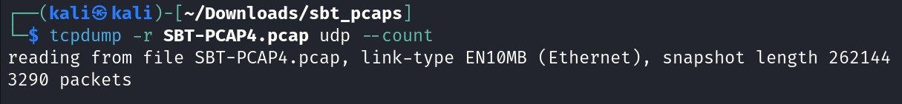
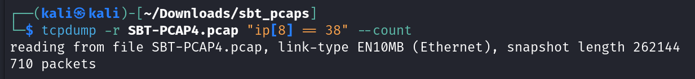
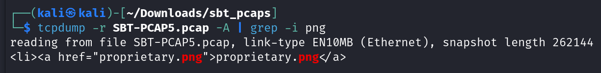
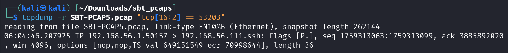

Network Analysis using tcpdump Writeup
< Back ⌂ HomeIntroduction
This write-up concerns the tcpdump Challenge, part of the Security Blue Team's Introduction to Network Analysis training course.
Link to the course: Introduction to Network Analysis
Go to homepage by clicking here.
Challenge
In this challenge, we are given two .pcap files named SBT-PCAP4.pcap and SBT-PCAP5.pcap. The following are the questions based on the given two pcap files:
PCAP 4
1. How many UDP packets have been captured?
2. How many TCP packets have both the SYN and ACK flags set?
3. Which version of Chrome was used to connect to securityblue.team?
4. How many packets have a TTL value of 38?
PCAP 5
1. What is the name of the PNG file on the webserver at 192.168.56.111?
2. Which version of OpenSSH is running on the server?
3. On which port is the .zip file being served?
4. When was a packet with a TCP checksum value of 53203 captured? (Format: xx:xx:xx.xxxxxx)
We will begin by analyzing PCAP 4 and then move on to PCAP 5.
Tools Required
Since this is a tcpdump challenge, we will require the tcpdump tool.
I used a Virtual Machine running Kali Linux as Operating System for this challenge since tcpdump comes pre-installed with Kali Linux. However, you may download tcpdump for Windows by following the instructions from here
Solution for PCAP 4
Let's start with analyzing PCAP 4. We will look over the file according to the required information.
Total UDP Packets
We need to find the number of UDP packets present in the pcap file. Hence, I wrote the following command:
tcpdump -r SBT-PCAP4.pcap udp --count
This command shows the total number of UDP packets present in the SBT-PCAP4.pcap file as shown in the image below.
Hence, there are 3290 UDP packets present in the SBT-PCAP4.pcap file.
Total TCP Packets with SYN and ACK flags set
TCP header consists a total of 8 flags. Each flag can have a value of either 0 or 1, with 1 meaning the flag is set. Hence, all 8 flags combine form a 8 bit binary number.
From left to right, the SYN flag is in the 7th position while the ACK flag is in the 4th position. Thus, our 8-bit binary number denoting both SYN and ACK flag set will be 00010010. The decimal equivalent of this binary number will be 18.
Hence, I wrote the following command to count the total number of packets that have both SYN and ACK flags set:
tcpdump -r SBT-PCAP4.pcap "tcp[tcpflags] == 18" --count
The following image shows the output of the command.

Hence, there are 20 packets with SYN and ACK flags set.
Finding the Chrome Version
In order to find the Chrome version, we will require a more verbose output from tcpdump this time. There are no specific commands to filter by browser name in tcpdump, hence I used the grep utility of Linux, as shown in the following command:
tcpdump -r SBT-PCAP4.pcap -v | grep Chrome
The following image shows the output of the above command.

Hence, the Chrome version used is 80.0.3987.87.
Total Packets with TTL value of 38
Time-to-live (TTL) is a field in the IPv4 header. This field is present at the 9th byte of the IPv4 header. Hence, the index of the TTL field in the IPv4 header will be 8 (index counting starts at 0).
Therefore, I wrote the following command to count the total number of packets with TTL equal to 38:
tcpdump -r SBT-PCAP4.pcap "ip[8] == 38" --count
The following image shows the output of the above command.
Hence, there are 710 packets that have a TTL value of 38.
Answering the PCAP 4 Challenge
Now, we have all the required information to answer this challenge.
1) How many UDP packets have been captured? 3290
2) How many TCP packets have both the SYN and ACK flags set? 20
3) Which version of Chrome was used to connect to securityblue.team? 80.0.3987.87
4) How many packets have a TTL value of 38? 710
Now, let us move on to the PCAP 5 Challenge solution.
Solution for PCAP 5
Let's analyze the SBT-PCAP5.pcap file based on the requested information.
Finding the PNG File Name
Since we need to find the name of the PNG file, we will require to view the content of the packets as well. The "-A" tag in tcpdump helps us to view the contents of the packet as well. Hence, I wrote the following command to filter the packet containing the "png" string in its content:
tcpdump -r SBT-PCAP5.pcap -A | grep -i png
The following image shows the output of the above command.
There is only one line from the entire pcap file that contains a ".png" file, hence this must be our required file. The name of the .png file is proprietary.png.
Finding the OpenSSH Version
We will require a more verbose output from tcpdump this time to also view the OpenSSH version. I wrote the following command to filter packets using OpenSSH:
tcpdump -r SBT-PCAP5.pcap -v | grep -i openssh
The following image shows the output of the above command.

There are 2 packets having OpenSSH strings in them. We know that the web server is running at 192.168.56.111. Hence, the OpenSSH server used by 192.168.56.111 is OpenSSH v7.9p1. Hence, the required OpenSSH version is 7.9p1.
Finding the Port serving ZIP File
Since we need to filter packets with the presence of a .zip file, we need to also view the content of the packets. Hence, I wrote the following command to filter the packet dealing with the .zip file:
tcpdump -r SBT-PCAP5.pcap -A | grep -i zip
However, as shown in the image below, it did not show the port number but did show gzip as one of the accepted encodings which confirms that this packet is related to the .zip file. Hence, we just need to display some more lines before this output to view the IP address and port number information. Hence, the following is the modified command:
tcpdump -r SBT-PCAP5.pcap -A | grep -i zip -B 3
This command displays 3 more lines before the normal output as shown in the image below.

The information shows the source socket as 192.168.56.111.3016 which is of the format IP.Port. Since 192.168.56.111 is the IP address of the server, 3016 is the port on which the .zip file is served.
Finding the Timestamp of required packet
We need to find the timestamp when the packet with a TCP Checksum value of 53203 was captured.
Checksum is a field in the TCP header. The checksum is 2 bytes long and starts at the 17th byte of the TCP header. Hence, the index of the checksum field in the TCP header will be 16 since we start counting at 0.
However, unlike ip[8] which we used previously in PCAP 4 challenge, we cannot simply use tcp[16] as by default it will only read 1 byte at index 16. Since the checksum is 2 bytes long, we need to clarify that we are reading 2 bytes at index 16, which can be done with the syntax tcp[16:2]. Hence, I wrote the following command to filter the packet with a checksum value of 53203:
tcpdump -r SBT-PCAP5.pcap "tcp[16:2] == 53203"
The following image shows the output of the above command.
Hence, the timestamp at which this packet was captured is 06:04:46.20792`.
Answering the PCAP 5 Challenge
Now, we have all the information to answer the challenge questions.
1. What is the name of the PNG file on the webserver at 192.168.56.111? proprietary.png 2. Which version of OpenSSH is running on the server? 7.9p1 3. On which port is the .zip file being served? 3016 4. When was a packet with a TCP checksum value of 53203 captured? (Format: xx:xx:xx.xxxxxx) 06:04:46.207925